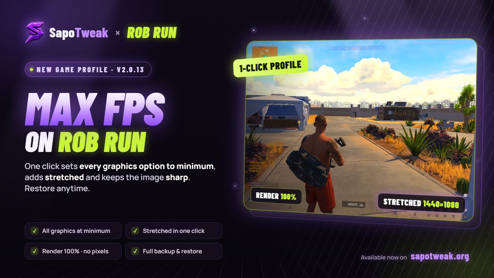
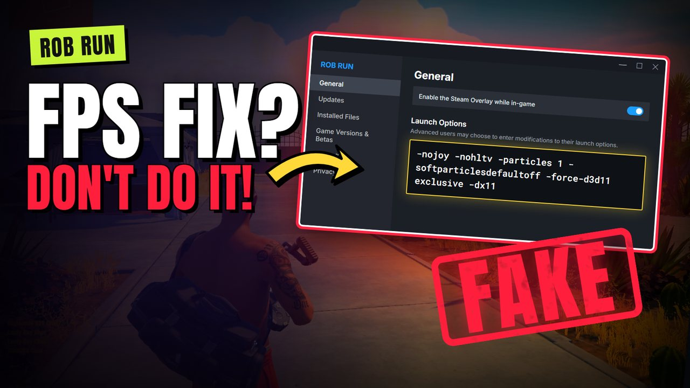

Rob Run FPS boost: best settings, stretched res and fake "FPS fixes"

SapoTweak's Rob Run profile: everything at minimum, stretched in one click and a sharp image.
Rob Run is in early access and on many PCs it stutters exactly when it matters: a robbery with the cops on you or a shootout downtown. TikTok is full of "FPS fixes", but most of them do nothing. This guide only covers what we actually checked on the game.
1. Best graphics settings
You'll find them in Settings → Graphics. These are the lowest values the game accepts, except render scale, which stays at 1.0 so the image doesn't look pixelated.
| Setting | Recommended | Why |
|---|---|---|
| Fullscreen | On | The game fills the screen and Windows gives it the fastest path to the monitor. |
| Render Resolution | 1.0 (never below 0.9) | Lower values blur the image and make distant enemies harder to see. |
| VSync | Off | Adds input lag. |
| Frame Rate | Your monitor's Hz (or higher) | A steady cap gives more consistent frametimes. |
| Anti-aliasing | Disabled | Costs GPU time and softens the image. |
| Post-processing | Off | Also turns off blur, depth of field and lighting effects. |
| Additional Light | Off | Extra lights are heavy downtown and at night. |
| Shadows | Disabled | The heaviest option; "Minimum Quality" is not the real minimum. |
| Texture Quality | Low | Less video memory used and fewer loading hitches. |
| Level of Detail | 0.4 (minimum) | Less detail on distant objects. |
| LOD Crossfade | Off | Skips the extra work when switching detail levels. |
| Object Visibility Distance | Low | Fewer far objects to draw. |
| Water | Minimum Quality | "Low Quality" is not the minimum: keep pressing left. |
| Grass / Grass Draw Distance | Minimum Quality / Low | Desert grass is heavier than it looks. |
| Interface Window Blur | Off | Removes the blur behind menus. |
Watch the names: for some options the real minimum has a different name. Shadows go down to "Disabled", not "Minimum Quality", and Water goes down to "Minimum Quality", not "Low Quality". Keep pressing the left arrow until the value wraps around to the top of the list.
2. Stretched res in Rob Run (1440x1080)
In fullscreen Rob Run uses the Windows resolution, not just the in-game one. Stretched takes three steps:
- In Windows: Settings → Display → Resolution, pick for example 1440x1080.
- In game: set Screen Resolution to the same value.
- In the NVIDIA (or AMD) panel: Adjust desktop size and position → Full-screen, "perform scaling on: GPU". Skip this and you'll get black bars.
When you're done playing, remember to set Windows back to your native resolution.
3. Mouse polling rate: 1000 Hz max
With a polling rate above 1000 Hz (2000, 4000, 8000 Hz) Rob Run starts dropping frames when you move the mouse. It's one of the most annoying stutters and many people blame their PC for it.
- Open your mouse software (Logitech G Hub, Razer Synapse, WLMOUSE and similar).
- Look for Polling Rate or Report Rate.
- Set 1000 Hz and save.
4. Steam launch options: what really works

The "FPS fix" launch options going around on social media.
Social media is full of command lists to paste into Steam → Rob Run → Properties → Launch Options. We checked them on the game:
| Command | Works? | Why |
|---|---|---|
-nojoy -nohltv -particles 1 -softparticlesdefaultoff | No | These are CS2 (Source engine) commands. Rob Run runs on Unity and ignores them. |
-force-d3d11 | No | Rob Run already uses DirectX 11 on its own: its log file says so. |
exclusive, -dx11 | No | They don't exist: wrong syntax, nothing happens. |
-window-mode exclusive | No | In our test it changed neither FPS nor how the game sends frames to the screen. |
-nolog | Barely | Only turns off the log file. Tiny effect, and if the game crashes there's no error trace. |
We measured Rob Run with PresentMon (the tool behind CapFrameX) on an RTX 5070 PC. With the game in the foreground and no launch options at all it already runs the fastest way possible:
Bottom line: leave launch options empty. FPS comes from game and Windows settings, not from commands copied from other games.
5. Windows: things to check
- Up-to-date GPU drivers from the NVIDIA, AMD or Intel website.
- Monitor refresh rate: in Settings → Display → Advanced display, make sure it isn't stuck at 60 Hz.
- No windows on top of the game: an always-on-top app over Rob Run forces Windows to recompose the image and adds delay.
- Game Mode on in Settings → Gaming.
- Background apps: close browsers and launchers you don't need while playing.
- Laptops: charger plugged in and "Best performance" power mode.
6. Do it all in one click
Setting every option by hand, switching resolution and remembering to switch it back takes time. SapoTweak is a Windows app that does it for you:
- One-click Rob Run profile: sets every graphics option to minimum with the game's real values and keeps render scale at 100%.
- Stretched in one click: sets the resolution both in game and in Windows. Restore puts everything back, Windows resolution included.
- 150+ Windows optimizations for stable FPS and less input lag, with an automatic backup of every change.
- Safe: it doesn't touch the anti-cheat or game files and only changes settings with the game closed.
- Discord support, with a full Rob Run guide (robberies, house, money, police).
Want Rob Run optimized without wasting time?
Try SapoTweak: from €9.99 a month, cancel anytime.
7. FAQ
Do Steam launch options boost FPS in Rob Run?
No. Commands like -nojoy, -nohltv or -particles are CS2 commands and Rob Run (Unity engine) ignores them. -force-d3d11 is useless because the game already runs DirectX 11, and -window-mode exclusive changed neither FPS nor present mode in our test.
How do I play Rob Run stretched?
In fullscreen Rob Run uses the Windows resolution: set the same resolution (for example 1440x1080) both in Windows and in the game, and set scaling to full-screen in the NVIDIA or AMD panel to avoid black bars.
Why does my mouse make Rob Run stutter?
With a polling rate above 1000 Hz (2000, 4000, 8000 Hz) Rob Run drops frames when you move the mouse. Set 1000 Hz in your mouse software.
Can optimizing my PC get me banned in Rob Run?
Changing the game's graphics settings or Windows settings is not cheating. SapoTweak does not touch the anti-cheat or game files: it only edits the settings file, with the game closed, and always saves a backup.